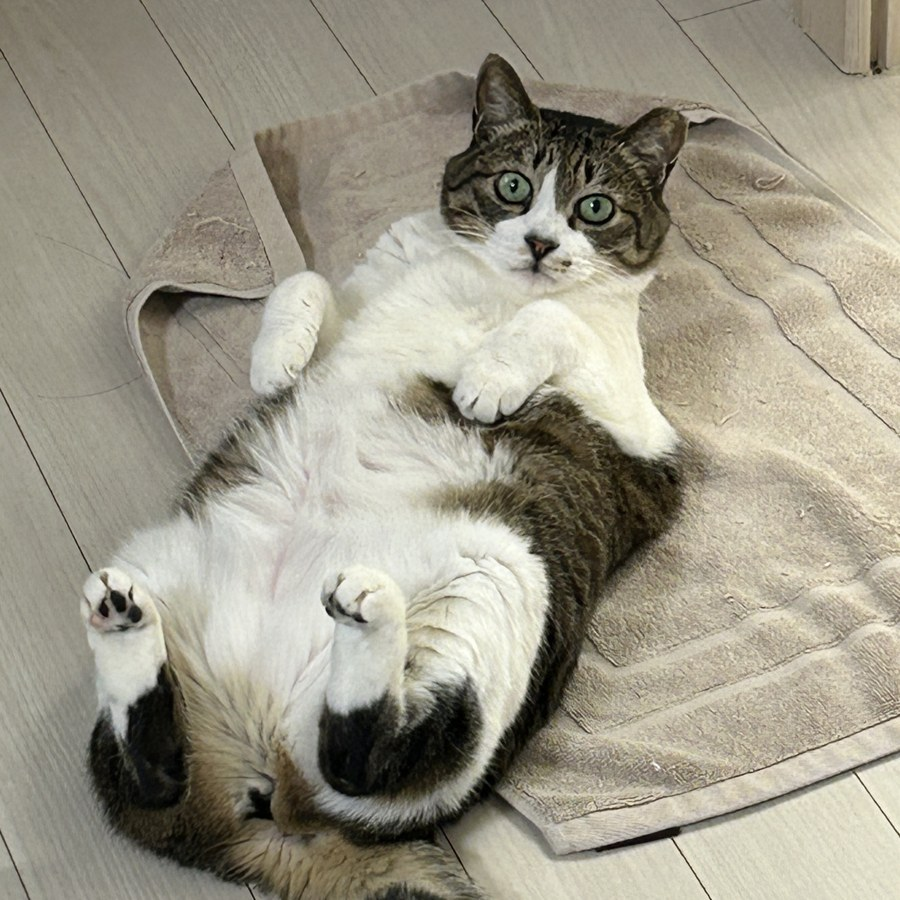
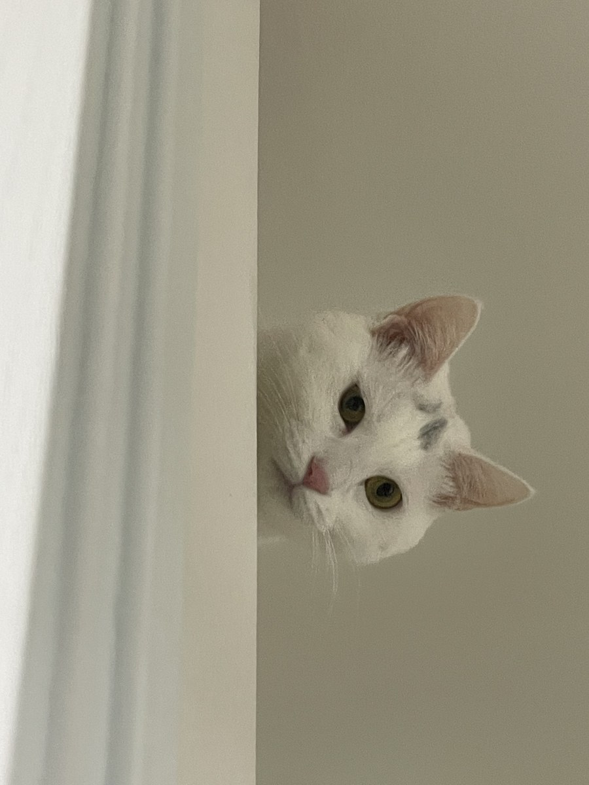
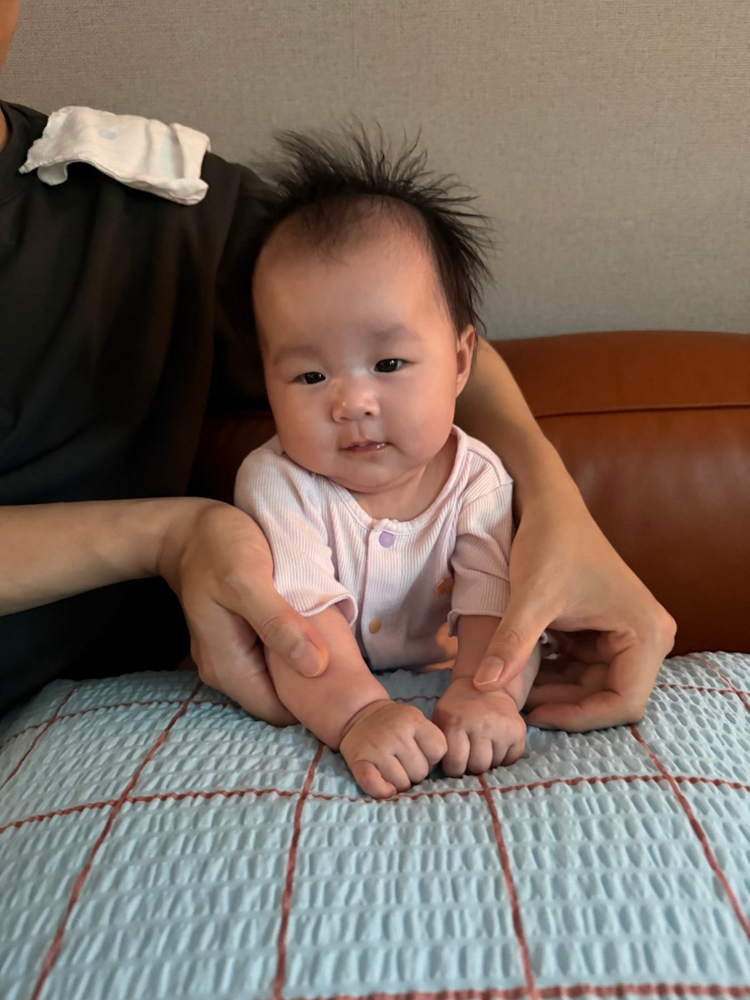
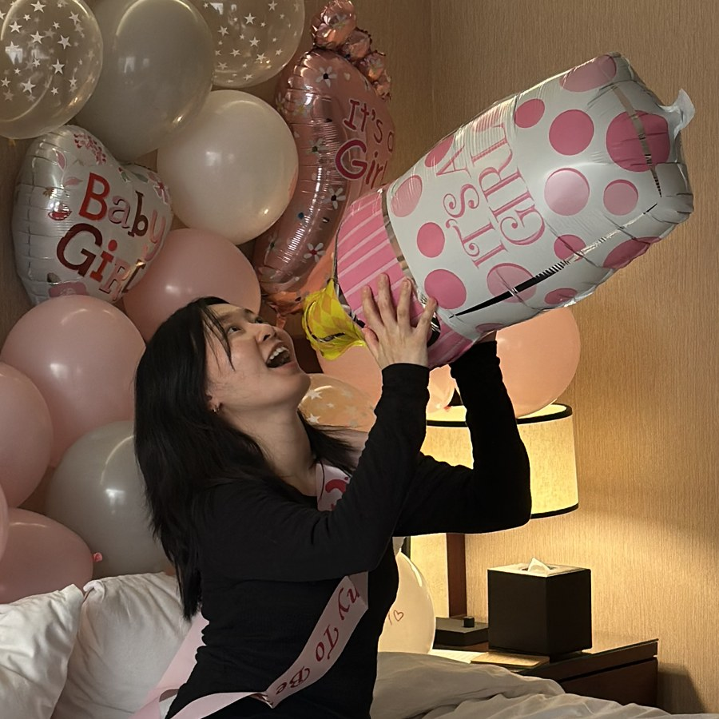

🎉 You found the world's cutest lab!
Congratulations — you've discovered the cutest research group on the internet.
Meet the full team. Peer review is conducted daily, usually at 3am.

IMZAA
Chief Approval Officer (Cat-in-the-Loop)
Provides "human" oversight for our AI agents by walking across the keyboard and approving every permission prompt — force pushes included. The fastest "yes" in human-AI collaboration. The safety team (me) has concerns.

SONG-EE
Distinguished Fellow of Butt-Pat Science
A devoted connoisseur of butt pats. Ongoing research finds that motivation scales linearly with pats per minute (n = 1, but the effect size is enormous).

CHAECHAE 🌼
Chief Nap Officer
Researching optimal sleep schedules. Preliminary finding: 4am is the best time to start the day.

Jihyun Yu
Chief Can Opener (a.k.a. The Staff)
Hired by the cats for can-opening expertise; promoted to coffee procurement by the baby. Occasionally writes papers between shifts.